|
|
| What's new for developers in Windows Mobile 5.0 |
by Jim Wilson (Jun. 1, 2005)
Foreword: Windows Mobile 5.0, introduced at last month's Windows Mobile and Embedded Developer's Conference, provides increased access to the rapidly improving hardware capabilities of next-generation mobile phones and PDAs. This extensive whitepaper introduces the many new features of Windows Mobile 5.0 from a developer's perspective, and provides an overview of the tools used by developers to create applications based on the new mobile device software platform.
Introduction
What's new for developers in Windows Mobile 5.0
by Jim Wilson -- Microsoft Corp.
Windows Mobile-based devices, both Pocket PC and Smartphone, are widely deployed around the world. Much of what drives the popularity of these highly portable devices is their rapidly improving hardware capabilities. These devices now provide high-quality displays, cameras, increased memory sizes, and powerful communications capabilities that were unimaginable not long ago. Windows Mobile 5.0 puts these powerful device capabilities and much more into easy reach of developers.
Windows Mobile 5.0 introduces a new generation of platform application programming interfaces (APIs) that expose rich multimedia support, rich two-dimensional and three-dimensional drawing capabilities, easy interaction with device hardware such as cameras or global positioning system (GPS) devices, straightforward interaction and integration with Pocket Outlook, and improved communications capabilities. These new APIs provide not only greater application capabilities, but they also improve developer productivity by encapsulating the details of these features in the platform, which allows developers to focus on the specific needs of their applications.
Windows Mobile 5.0 is the first platform to expose both native and managed versions of platform APIs, which allows developers to choose the most appropriate development model based on their skills and application appropriateness. Windows Mobile 5.0 also incorporates many API enhancements to provide greater continuity between Windows Mobile devices and Windows desktop and server computer platforms, allowing developers to use a common skill set across all Windows platforms.
This article explains these new features in Windows Mobile 5.0 from a developer's perspective and explains the tools that developers use to create Windows Mobile 5.0 solutions. The following sections outline some of the most notable Windows Mobile 5.0 features.
Improved Productivity
The following list provides an overview of some of the ways that Windows Mobile 5.0 improves developer productivity: - New APIs address many of the most common mobile device development challenges, which include picture management, contact management, and GPS, freeing developers to focus on building compelling applications.
- Greater continuity between Windows Mobile software for Pocket PC and Windows Mobile software for Smartphone provide greater portability of code and applications between devices.
- New state and notification broker API allows applications to easily track system activities such as changes in network status, receipt of a short message service (SMS) message, or an incoming telephone call.
- Visual Studio 2005 simplifies device development through several productivity tools such as data designers, a faster debugger, and improved user interface designers, which include support for developers to view application presentations across different screen orientations, resolutions, and devices.
- Improved emulators, including a new ARM emulator, simplify application testing by more accurately representing the device environment, thereby reducing the number and level of tests developers need to run directly on a device.
Multimedia Support
The following list provides an overview of Windows Mobile 5.0's rich multimedia support: - Integrated camera APIs enable developers to embed camera, picture, and video functionality directly into applications.
- Windows Media Player 10 Mobile enables developers to integrate media player functionality into their applications, including library management and playback.
- Direct3D enables developers to deliver rich three-dimensional gaming environments.
- DirectDraw provides developers with greater control and flexibility in rendering high-speed two-dimensional graphics.
Managed Code Support
Windows Mobile 5.0 provides first-class support for managed code developers. The following list provides an overview of Windows Mobile 5.0's managed code support: - All Windows Mobile 5.0 devices have the .NET Compact Framework 1.0 Service Pack 3 installed in ROM. This provides a consistent target platform for managed application deployment.
- Many core device features such as messaging, telephony, and Outlook Mobile now expose managed APIs, making them directly accessible from managed code.
- Many operating system features exposed directly as managed APIs provide access to managed developers across all versions to the .NET Compact Framework.
Windows Mobile 5.0 APIs
Windows Mobile 5.0 offers many new APIs. Although these new APIs are spread across a number of different services, they are all focused on the common goal of improving developer productivity. By incorporating many commonly performed tasks in the operating system, application developers focus on the specific needs of individual applications.
For the first time, Windows Mobile 5.0 exposes operating system features directly to managed developers. These new managed APIs include newly added operating system features in addition to the newly provided managed classes for existing operating system features.
You can categorize the new Windows Mobile 5.0 APIs into three groups: newly added APIs that directly target native developers; existing native APIs that are now exposed to managed developers; and newly added APIs that are available to both native and managed developers.
Newly Added APIs
This section describes the newly added APIs that directly target native developers.
Direct3D Mobile - As Windows Mobile devices include increasingly rich displays and given the popularity of three-dimensional desktop computer games, the next logical step is the widespread production of three-dimensional games for mobile devices. Direct3D Mobile now makes this possible.
- Direct3D Mobile is a mobile device implementation of the desktop computer's Direct3D API. Using Direct3D Mobile, developers can use their existing desktop computer Direct3D skills and code to produce rich three-dimensional gaming environments for Windows Mobile devices.
- Direct3D Mobile takes full advantage of graphics hardware support and enables the development of high-performance three-dimensional rendering on mobile devices. This support enables developers to create powerful three-dimensional gaming environments in addition to the ability to incorporate creative three-dimensional user interfaces.
Direct Draw - For applications that need to directly manipulate display memory, provide high-speed two-dimensional graphics, or incorporate digital video, Windows Mobile 5.0 provides the DirectDraw API. By providing a common abstraction over the device display hardware, DirectDraw provides application developers with the ability to directly manipulate device display hardware in a way independent of devices.
- DirectDraw provides mobile developers with a powerful replacement for the Game API (GAPI) allowing applications to take full advantage of hardware capability and performance in addition to providing support for drawing surfaces that developers can easily query.
- DirectDraw is a mobile device implementation of the desktop computer's DirectDraw API. Desktop computer developers can take advantage of their existing skills and can bring existing DirectDraw code and libraries to Windows Mobile 5.0 devices.
DirectShow - A rapidly increasing number of mobile devices now include cameras. For developers wanting to create applications that interoperate with these camera-enabled devices, there is the DirectShow API. DirectShow provides application developers the capability to manage and access camera hardware, enabling capture and playback of high-quality pictures and streaming video. DirectShow abstracts the details of individual camera hardware, providing application developers with a common and consistent programming interface.
- DirectShow supports a wide variety of file formats, and developers can customize and extend it to support new or specialized formats. Similar to Direct3D and DirectDraw, DirectShow is a mobile implementation of the desktop computer API and allows desktop computer developers to quickly apply their existing skills to take advantage of their existing code investment.
Global Positioning System
Many mobile devices now include a GPS either internally or as an attachment. Historically, for applications to access the information a GPS device returned required these applications to use the serial APIs to directly open the GPS device. This technique created two issues. First, working through the serial APIs is relatively code intensive and required the application developer to have at least a moderate knowledge about serial device programming. Second, this architecture limited the receipt of GPS data to the single, currently connected application. Windows Mobile 5.0 eliminates these issues with the GPS Intermediate Driver.
The GPS Intermediate Driver provides a very simple-to-use API for providing shared access to GPS data. Through the GPS Intermediate Driver, Windows Mobile greatly reduces the amount of code that is required to interact with a GPS device and allows multiple applications to interrogate the GPS device for configuration and positioning information simultaneously. Table 1 shows the four functions used to access the GPS Intermediate Driver.
| Function | Description | | GPSOpenDevice | Connect to the GPS Intermediate Driver | | GPSCloseDevice | Disconnect from the GPS Intermediate Driver | | GPSGetPosition | Retrieve GPS location information | | GPSGetDeviceState | Retrieve information about the current state of the GPS hardware |
Table 1. The GPS Intermediate Driver functions
Uniquely Identifying a Device
For applications that need to uniquely identify individual devices, Windows Mobile 5.0 includes the GetDeviceUniqueID method. By using GetDeviceUniqueID, independent software vendors (ISVs) can now easily protect intellectual property by tying each software license to a specific device. Corporate developers will find it useful for tracking data and application distribution to specific devices.
Digital Rights Management
Digital Rights Management (DRM) remains an important part of protecting and distributing intellectual property. For some application developers, supporting the differences among the various DRM engine APIs slows application development and reduces code portability.
To eliminate these issues, Windows Mobile 5.0 provides the File-Based Digital Rights Management (FDRM) API. FDRM provides a common programming interface across the different DRM engines. The common programming interface improves developer productivity and code portability. Developers now only need to target FDRM without regard for the specific DRM engine the device uses.
ActiveSync Interaction
Developers can now start and stop the ActiveSync synchronization process from the device by using the ActiveSyncStart and ActiveSyncStop methods.
Additional Windows Mobile 5.0 Functions
Table 2 shows additional Windows Mobile 5.0 functions not described in this section.
| Function | Description | | QueryPolicy | Provides a simplified alternative to DMProcessConfigXML for developers to use to retrieve the value of an individual policy setting. | | ExitWindowsEx | Allows an application to shutdown the device. On Pocket PC, an application uses ExitWindowsEx only to reboot the device. On Smartphone, an application uses ExitWindowsEx to either turn off or reboot the device. | | DrawFocusRectColor | Uses the color and style of the current theme to draw the specified rectangle as if it has focus. |
Table 2. Additional Windows Mobile 5.0 functions
Existing Operating System Features That Are Now Exposed as Managed APIs
The features listed here are not new to the Windows Mobile platform. What is new are the managed APIs provided by Windows Mobile 5.0. By providing these managed APIs, Windows Mobile 5.0 allows managed developers to directly access these features without needing assistance from native code and without regarding the specific version of the .NET Compact Framework the application uses.
Telephony
Windows Mobile 5.0 now exposes basic telephone behavior through the Microsoft.WindowsMobile.Telephony.Phone class. By using the new Phone class's Talk method, developers can program applications to initiate phone calls and optionally prompt the user to verify the number before placing the call. The Phone class requires a reference to the Microsoft.WindowsMobile.Telephony assembly.
The following code shows both forms of the Phone.Talk method.
using Microsoft.WindowsMobile.Telephony;
// ...
Phone thePhone = new Phone();
// Place a call to the specified number
thePhone.Talk("4255551212");
// Place a call to the specified number after
// first prompting the user to verify the number
thePhone.Talk("4255551212", true);
Outlook Mobile
Personal Information Manager (PIM) data is at the heart of many mobile device applications, and Windows Mobile has provided an excellent PIM system for many years in Pocket Outlook. Windows Mobile 5.0 now exposes Pocket Outlook directly to managed developers through the classes in the "Microsoft.WindowsMobile.PocketOutlook" namespace and assembly of the same name. With the new managed Pocket Outlook API, developers can easily incorporate PIM data as part of their applications. A few of the commonly used classes are shown in Table 3.
| Class | Description | | OutlookSession | Represents the Pocket Outlook application exposing properties for Appointments, Contacts, Tasks, in addition to e-mail and SMS accounts. | | Appointment | Represents a scheduled block of time. Includes properties identifying the appointment details and how the appointment reminder should be signaled. Provides events applications can handle to be notified of changes to an appointment. | | Contact | Represents an information record for an individual or organization. Includes more then 60 distinct properties for tracking contact information with corresponding events, making it easy for applications to track changes that the user or applications makes to contact data. | | Task | Represents an actionable to-do item. Includes a variety of properties identifying task details, including progress and how the task reminder should be signaled. Provides events applications can handle to be notified of changes to a task. |
Table 3. Commonly used Pocket Outlook managed classes
The new Pocket Outlook managed object model greatly simplifies application interaction with Pocket Outlook. The following code shows how easily you can add a new appointment.
using Microsoft.WindowsMobile.PocketOutlook;
// ...
// Create the Appointment and set the details
Appointment theAppointment = new Appointment();
// Set the subject
theAppointment.Subject = "MEDC 2005 Precon";
// Set the appointment to start on May 9, 2005 at 9:00 A.M.
theAppointment.Start = new DateTime(2005, 05, 09, 09, 00, 00);
// The appointment lasts for eight hours
theAppointment.Duration = new TimeSpan(08, 00, 00);
// Issue a reminder by having the device vibrate
theAppointment.ReminderVibrate = true;
// Repeat the reminder until the user dismisses it
theAppointment.ReminderRepeat = true;
// Create the Outlook session and add the appointment
// to the Outlook Appointment Folder
using (OutlookSession session = new OutlookSession())
{
session.Appointments.Items.Add(theAppointment);
}
Figure 1 shows the Pocket Outlook calendar after the device runs the previous code.
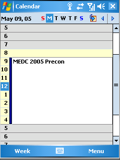
Figure 1. The newly created appointment in Pocket Outlook
Messaging
In addition to providing access to PIM data, the Pocket Outlook object model provides managed support for both e-mail and SMS messages through the "Microsoft.WindowsMobile.PocketOutlook.EmailAccount" and "Microsoft.WindowsMobile.PocketOutlook.SmsAccount" namespaces respectively. The classes in these namespaces enable managed code developers to easily integrate messaging into their applications.
For managed application developers who need to integrate e-mail capabilities, the EmailAccount class provides complete e-mail functionality, including support for attachments. The following code demonstrates how a developer can easily send an e-mail message. This example uses ChooseContactDialog to prompt the user to select a contact to send an e-mail message to. The code then creates an e-mail message, attaches a Pocket Excel workbook, and then sends the message to the selected contact by using the device's primary e-mail account.
using Microsoft.WindowsMobile.PocketOutlook;
using Microsoft.WindowsMobile.Forms;
// ...
ChooseContactDialog contactDialog = new ChooseContactDialog();
contactDialog.Title = "Select user to send message";
if (contactDialog.ShowDialog() == DialogResult.OK)
{
EmailMessage message = new EmailMessage();
message.To.Add(
new Recipient(contactDialog.SelectedContact.Email1Address));
message.Subject = "MEDC Session List";
message.BodyText =
"I've attached the list of MEDC sessions - hope to see you there";
message.Attachments.Add(new Attachment(@"\My Documents\Sessions.xls"));
using (OutlookSession session = new OutlookSession())
{
session.EmailAccounts[0].Send(message);
}
}
SMS remains a very popular and efficient communications mechanism. Windows Mobile 5.0 managed application developers can fully integrate both sending and receiving of SMS messages into their applications.
The following code uses ChooseContactDialog to prompt the user to select a contact. The code then uses the device's configured SMS account to send a message to the contact the user selects, and then requests a return receipt.
using Microsoft.WindowsMobile.PocketOutlook;
using Microsoft.WindowsMobile.Forms;
// ...
ChooseContactDialog contactDialog = new ChooseContactDialog();
contactDialog.Title = "Select user to send message";
if (contactDialog.ShowDialog() == DialogResult.OK)
{
// Construct message requesting delivery receipt
SmsMessage message = new SmsMessage(
contactDialog.SelectedContact.MobileTelephoneNumber,
"R U Going to the Keynote?");
SmsMessage message.RequestDeliveryReport = true;
// Send message
message.Send();
}
Windows Mobile 5.0 makes intercepting and processing SMS messages easy as well. Developers can use the classes in the "Microsoft.WindowsMobile.PocketOutlook.MessageInterception" namespace (and found in the Microsoft.WindowsMobile.PocketOutlook assembly) to create .NET Compact Framework applications that intercept and process SMS messages that are sent to the device.
The message interception mechanism is highly configurable, allowing applications to register content-based interest in SMS messages. The developer can program the device to notify the application about messages based on sender, receiver, or message contents. The developer can also program the interception system to start the application that requested notification if the application is not already running. Table 4 shows some of the message interception classes.
| Class | Description | | MessageInteceptor | Raises an event when a message meeting the specified condition arrives. This class optionally starts the application that requested notification if the application is not already running. | | MessageCondition | Identifies the message condition to be met. | | MessageInteceptorEventHandler | Delegate type implemented by classes registering to receiving message notification. |
Table 4. Commonly used SMS message interception managed classes
Configuration Manager
Windows Mobile 2003 introduced the Configuration Manager, which tremendously simplified configuring and deploying Windows Mobile devices because developers could set nearly all configurable aspects of a device by using XML. By using the Microsoft.WindowsMobile.Configuration.ConfigurationManager class, managed developers can now take full advantage of this capability.
The ConfigurationManager class includes two static methods: ProcessConfiguration and TestConfiguration. Managed developers can use ProcessConfiguration to configure e-mail, security policies, localization, Home screen, virtual private network (VPN) settings, file system and much more. This class provides developers with one-stop shopping for all device configuration issues. TestConfiguration allows managed developers to verify that the configuration XML is valid without affecting any device settings. The following example demonstrates using ProcessConfiguration to add the MSDN Mobility Web site to the device browser favorites.
using System.Xml;
using Microsoft.WindowsMobile.Configuration;
// ...
string configurationXml =
@"wap-provisioningdoc
characteristic type='BrowserFavorite'
characteristic type='MSDN Mobility'
parm name='URL' value='http://msdn.microsoft.com/mobility'/
/characteristic
/characteristic
/wap-provisioningdoc";
// Load XML into the DOM
XmlDocument configurationXmlDoc = new XmlDocument();
configurationXmlDoc.LoadXml(configurationXml);
// Send to Configuration Manager
ConfigurationManager.ProcessConfiguration(configurationXmlDoc, false);
New APIs Available to Both Native and Managed Developers
As the Windows Mobile platform evolves, a growing number of both native and managed developers are developing rich, sophisticated applications. To address the needs common to both groups of developers, many of Windows Mobile 5.0's new features directly expose both native and managed APIs. Including the managed APIs as part of the Windows Mobile 5.0 platform itself makes these APIs available to all managed developers without regarding the specific version of the .NET Compact Framework the application uses.
State and Notification Broker API
Windows Mobile 5.0 introduces a new and very powerful facility called the State and Notification Broker API. The State and Notification Broker API provides a unified mechanism for storing device, application, and system state information. Beyond simply being a unified store, it provides a centralized notification architecture, allowing applications to easily register for notification, optionally starting an application in the event that a value of interest should change. The model allows applications to easily share their own state information as well.
Windows Mobile 5.0 devices ship with well over one hundred different state values, which are available through the State and Notification Broker API. The available values provide a wide variety of information regarding the standard Windows Mobile 5.0 applications in addition to the device itself. The following list is just a small sample of the information available through the State and Notification Broker: - The active application
- The device's ActiveSync status
- Current battery level
- Whether a camera is connected to the device
- Whether a headset is plugged in
- The name of the song currently playing in Media Player
- Number of unread SMS messages
- Number of unread e-mail messages
- Whether a call is currently in progress
- Whether a conference call is currently in progress
- Whether GPRS connectivity is currently available
- Whether the device is currently connected to a VPN
- Number of missed phone calls
- The name of the phone's mobile operator
- Number of tasks due today
In addition to these items, original equipment manufacturers (OEMs) and application developers can add to this list. Developers can easily program applications to retrieve any State and Notification Broker API stored value and if desired, the developer can program the application to monitor one or more values for changes.
The underlying implementation of the State and Notification Broker relies on the registry. Each provider creates a registry key, adding values to that key representing each state value. After the provider creates the registry key, the State and Notification Broker monitors the value for change, automatically notifying all parties having registered interest in the value. All system-state properties are stored either under HKEY_CURRENT_USER\System\State or HKEY_LOCAL_MACHINE\System\State. These keys are secured, allowing read-only access to untrusted applications. Applications can add their own state values to HKEY_CURRENT_USER\Software\State and HKEY_LOCAL_MACHINE\Software\State.
If native developers want to receive notifications, they have several options including Windows messages, callback function, and message queues. Developers who want to create a notification provider can create a key under one of the appropriate registry locations and use either the RegistrySetDWORD or RegistrySetString functions to create and modify the values under that key. Table 5 lists commonly used native State and Notification Broker functions.
| Function | Description | | RegistryNotifyApp | Notifies the application of a change to the specified state value by sending a Windows message to an application window. The State and Notification Broker API starts the application if it is not already running. | | RegistryNotifyWindow | Notifies the application of a change to the specified state value by sending a Windows message to an application window. | | RegistryNotifyMsgQueue | Notifies the application of a change to the specified state value by sending a notification to the named message queue. | | RegistryNotifyCallback | Notifies the application of a change to the specified state value by calling the passed callback function. | RegistryGetDWORD
RegistryGetString | Retrieves the current state value. | RegistrySetDWORD
RegistrySetString | Used by a State and Notification Broker API provider to create and modify state values. | | RegistryTestExchangeDWORD | Used by a State and Notification Broker API provider to conditionally modify state values performing the test and update as a single atomic operation. |
Table 5. Commonly used State and Notification Broker API native functions
Managed developers interact with the State and Notification Broker by using the classes belonging to the "Microsoft.WindowsMobile.Status" namespace and assembly of the same name. The standard delegate mechanism is used to send state-change notifications to managed classes. Table 6 shows the list of commonly used managed classes.
| Class | Description | | RegistryState | Encapsulates a monitored state value including value retrieval, monitoring the value for change, and optionally starting an application if the value changes. | | SystemState | Provides an abstraction over the common system-state values and provides access to these values through properties. |
Table 6. Commonly used State and Notification Broker API managed classes
Picture Selection Dialog
As applications increasingly incorporate photos and graphics, these applications need an easy way to present a list of pictures to a user for selection. To address this need, Windows Mobile 5.0 provides a picture selection dialog. The dialog is available to native developers through the GetFileNameEx function; for managed developers, it's exposed through the Microsoft.WindowsMobile.Forms.SelectPictureDialog class. Figure 2 shows the picture selection dialog.
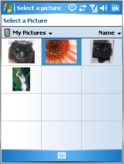
Figure 2. The picture selection dialog.
The picture selection dialog is highly configurable and allows the application developer to control the dialog's behavior in a number of ways, including limiting the locations the user may browse for images, controlling whether the user is allowed to browse for images from the attached camera (if one exists), and how DRMprotected files should be handled.
Camera Capture API/SHCameraCapture
Camera enabled devices are extremely popular. With these devices being so widely available, application developers now have the opportunity to substantially enhance the user experience by integrating the capture of both still and video images directly into their applications. To enable application developers to easily provide this functionality, Windows Mobile 5.0 provides the camera capture dialog.
The camera capture dialog provides a device-independent way for application developers to integrate photos, video, and video with sound capture into their applications. The dialog provides developers with complete control over the camera capture process, which includes the type, quality, and the maximum length of the capture (in the case of video). Native developers take advantage of the camera capture dialog with the SHCameraCapture function; managed developers use Microsoft.WindowsMobile.Forms.CameraCaptureDialog.
Pocket Outlook Enhancements
Pocket Outlook provides both users and application developers with an easy-to-use PIM. Integrating Pocket Outlook into your applications benefits both your application and its users. Users benefit by having consistent PIM experience and data whether they interact with Pocket Outlook directly or through your application. Your application benefits by having the opportunity to instantly incorporate the users' complete PIM data.
To further simplify the ways applications interact with Pocket Outlook and to provide the opportunity for applications to incorporate even richer Pocket Outlook interaction, Pocket Outlook provides several new features to both native and managed developers.
Contact Selection Dialog
As its name implies, the contact selection dialog enables applications to display a full-featured contact selection dialog just like Pocket Outlook displays. The dialog provides filtering capabilities that the user can use to select entire contacts or individual contact properties such as phone numbers or e-mail addresses. When displayed, the user can select a contact directly or can enter a portion of the contact name, which automatically filters the list to show only the matching names. The dialog optionally supports allowing users to add new contacts. The contact selection dialog is available to native developers through the ChooseContact function; managed developers use the ChooseContactDialog class.
The following examples demonstrate how to use the contact selection dialog from both C++ and C#. In each case, the application displays the dialog limiting the user to select an existing contact. To keep the example simple, the application then displays the selected contact's name in a MessageBox.
The following code demonstrates the Contact Selection Dialog in C++.
#include pimstore.h
// ...
HRESULT hr = E_FAIL;
CHOOSECONTACT cc = {0};
cc.cbSize = sizeof (cc);
cc.dwFlags = CCF_RETURNCONTACTNAME | CCF_HIDENEW;
// Display the contact selection dialog
hr = ChooseContact(&cc);
// Show the selected name
MessageBox(NULL, cc.bstrContactName, TEXT("Selected Contact"), MB_OK);
// Free memory
SysFreeString(cc.bstrContactName);
The following code demonstrates the Contact Select Dialog in C#.
using Microsoft.WindowsMobile.PocketOutlook;
using Microsoft.WindowsMobile.Forms;
// ...
ChooseContactDialog contactDialog = new ChooseContactDialog();
contactDialog.HideNew = true;
contactDialog.ShowDialog();
// Show the selected name
MessageBox.Show(contactDialog.SelectedContactName, "Selected Contact");
Figure 3 shows the displayed dialog.
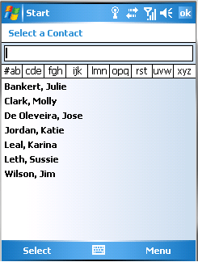
Figure 3. The new ChooseContactDialog contact picker class
Event Notifications
Windows Mobile 5.0 allows applications to now cooperate more closely with Pocket Outlook then ever before thanks to the introduction of event notifications. Event notifications allow both native and managed applications to monitor for additions, deletions, and modifications of members within the Pocket Outlook folders.
To register to receive these notifications, native applications must access the IItem interface on the Folder object of interest,and then call the IItem.SetProp method to set the property PIMPR_FOLDERNOTIFICATION to one of the values in Table 7.
| Notification flag | Description | | PIMFOLDERNOTIFICATION_LOCAL | Send notification to the application when changes are made from the current process. | | PIMFOLDERNOTIFICATION_REMOTE | Send notification to the application when changes are made from other processes. | | PIMFOLDERNOTIFICATION_ALL | Send notification to the application when changes are made from any process. |
Table 7. Pocket Outlook folder notification flags
As changes occur, messages are sent to the window registered in the call to the IPOutlookApp.Logon. Table 8 shows the possible messages.
| Notification flag | Description | | PIM_ITEM_CREATED_LOCAL | This process created a PIM item. | | PIM_ITEM_DELETED_LOCAL | This process deleted a PIM item. | | PIM_ITEM_CHANGED_LOCAL | This process changed a PIM item. | | PIM_ITEM_CREATED_REMOTE | Another process created a PIM item. | | PIM_ITEM_DELETED_REMOTE | Another process deleted a PIM item. | | PIM_ITEM_CHANGED_REMOTE | Another process changed a PIM item. |
Table 8. Pocket Outlook notification messages
Managed applications use the standard delegate mechanism to handle the ListChanged event exposed by AppointmentCollection, ContactCollection, and TaskCollection. These collections are most easily accessed by means of the Items property in the corresponding folder. The following example demonstrates registering a delegate to handle changes to the appointments collection.
using Microsoft.WindowsMobile.PocketOutlook;
// ...
OutlookSession session = new OutlookSession();
session.Appointments.Items.ListChanged +=
new ListChangedEventHandler(Items_ListChanged);
// ListChanged Event Handler
void Items_ListChanged(object sender, ListChangedEventArgs eventArgs)
{
// Details of change are found in eventArgs
}
In addition to tracking changes to all objects within a folder, managed developers can be notified of changes to any specific Appointment, Contact, or Task. Each property in these classes has a corresponding event. For example to be notified of a change to the Start property of an Appointment, handle the Appointment.StartChanged event. To be notified of changes to the BusinessTelephoneNumber of a Contact, handle the Contact.BusinessTelephoneNumberChanged event.
Custom Properties
Many applications not only use data that Pocket Outlook provides, but they also need to extend the standard Pocket Outlook object model to track additional data. Historically, developers that wanted their applications to do so had to explicitly manage the storage of the extended data and its correlation to the Pocket Outlook objects. Windows Mobile 5.0 eliminates the need to manually manage extended content through the introduction of custom properties.
Custom properties allow both native and managed applications to associate custom data directly with Appointment, Contact, and Task objects. Pocket Outlook automatically stores this associated data in its data store, which can be accessed directly through the associated Appointment, Contact, or Task object. The custom properties can be any arbitrary type from simple types, such as int, to complex custom objects. To access custom properties, native application developers use IItem.GetProps/IItem.SetProps; managed developers use the PimPropertySet property exposed by Appointment.Properties, Contact.Properties, and Task.Properties.
Mail Application Management
Messaging, both SMS and e-mail, is at the heart of modern communications containing everything from casual conversations to detailed business process information. Many applications can benefit by closely integrating messaging thereby providing users with a seamless experience between interacting directly with the application and interacting with SMS or e-mail messages related to the application. Windows Mobile 5.0 makes it easy for developers to provide this seamless experience with the introduction of several new messaging APIs.
These new message APIs provide both native and managed developers with easy access to several features in the device messaging program. These features include displaying existing e-mail messages, using the messaging system's SMS and Email forms to compose new messages, and the ability to control the currently active account in the messaging system. By using these APIs, developers can provide users with a smooth transition between the application and the device messaging program giving users a familiar and consistent messaging experience. Table 9 shows the list of native messaging system functions, and Table 10 shows the managed messaging system functions.
| Function | Description | | MailComposeMessage | Displays the message compose form including any content or attachments. | | MailDisplayMessage | Displays an existing message using the standard message display form. | | MailSwitchToAccount | Gives the messaging program focus and switches to the specified account. | | MailSwitchToFolder | Gives the messaging program focus and switches to the specified folder. | | MailSyncMessages | Synchronizes a specified account with the mail server. |
Table 9. Native mail application management functions
| Function | Description | | MessagingApplication.DisplayComposeForm | Displays the message compose form including any content or attachments | | MessagingApplication.DisplayMessage | Displays an existing message. | | MessagingApplication.SwitchToAccount | Gives the messaging program focus and switches to the specified account. | | MessagingApplication.Synchronize | Synchronizes a specified account with the mail server. |
Table 10. Managed mail application management functions
Tools and Technologies
Microsoft provides a number of tools and technologies for developers who create applications targeting the Windows Mobile 5.0 platform. These tools simplify the development process and improve developer productivity. This section describes these tools and technologies.
Visual Studio 2005
Visual Studio 2005 is the tool of choice for Windows Mobile 5.0 development providing a productive development experience and the most complete integration with the Windows Mobile 5.0 platform. Modern application development requires developers to use a wide variety of skills because these applications often must mix server, desktop computer, and device components. In many cases, providing a complete solution may also involve combining native and managed code. Visual Studio 2005 is the first development platform that enables developers to build, debug, and deploy for all of these environments from a single tool. A single development tool for all application types provides a consistent and familiar development experience for developers to work more efficiently in addition to take advantage of existing investments in developer training and code libraries.
Integrated Native Development
Visual Studio 2005 includes full support for developing device applications using C/C++. It is the successor to eMbedded Visual C++ 4.0. Visual Studio 2005 provides C/C++ device developers with a complete toolset and supports the same wizards and tools previously available through eMbedded Visual C++ 4.0. Visual Studio 2005 includes the familiar application wizards to create MFC, ATL, and Win32 projects. When developers add classes to projects, Visual Studio 2005 provides the complete suite of class wizards for ATL, MFC, and C++. It also includes other familiar tools such as the device cross-compilers, resource editor, debugger, and emulator. Visual Studio 2005 also fully integrates the device SDKs.
In addition to providing C/C++ developers with familiar features, Visual Studio 2005 also introduces many new features like Intellisense, integrated testing, access to the rich set of Team System features, and much more. By using Visual Studio 2005, device C/C++ developers automatically have access to the wide variety of Visual Studio 2005 developer productivity features.
By integrating device C/C++ development into Visual Studio 2005, developers are now able to use a single set of skills for server, desktop computer, and device applications. It is no longer necessary for developers to understand one tool for server and desktop computer applications, and a different tool for device applications. This also means that when developing C/C++ device applications, desktop computer developers no longer have to give up the rich set of features and third-party tools that are available for Visual Studio 2005.
This is also excellent news for developers who work in both native and managed code on devices because they can now use a single tool as well. Developers needing to create both native and managed projects as part of a single application can even put the native and managed projects in a single Visual Studio 2005 solution.
Mobile device C/C++ developers are not limited to developing Windows Mobile 5.0 applications with Visual Studio 2005. Visual Studio 2005 supports developing native mobile device applications for all Windows Mobile platforms from Windows Mobile 2003 and later. This means that Developers targeting Pocket PC and Smartphone devices running Windows Mobile 2003, Windows Mobile 2003 Second Edition, and Windows Mobile 5.0 can take advantage of Visual Studio 2005.
Windows Mobile 5.0 will continue to run applications developed with eMbedded Visual C++ 3.0 and eMbedded Visual C++ 4.0. However, developers using these tools will not be able to debug or deploy their applications directly to Windows Mobile 5.0. Only Visual Studio 2005 supports deploying and debugging applications directly to Windows Mobile 5.0.
Integrated Managed Development
For mobile device developers who use managed code, Visual Studio 2005 is the tool of choice and replaces Visual Studio .NET 2003. Developers who are familiar with Visual Studio .NET 2003 will find Visual Studio 2005 to provide a very familiar and consistent experience.
Visual Studio 2005 introduces the .NET Compact Framework 2.0 to managed developers providing many new classes and methods. It also includes a number of enhancements to the runtime such as improved performance and support for advanced programming features like Generics and Anonymous functions. For developers who need to support existing .NET Compact Framework 1.0 applications or those wanting to stay with the .NET Compact Framework 1.0 due to its wide availability in ROM on Windows Mobile devices, Visual Studio 2005 continues to support .NET Compact Framework 1.0 for both Pocket PC and Smartphone development.
Whether developing .NET Compact Framework 1.0 or 2.0 applications, managed developers can take full advantage of the powerful device development environment of Visual Studio 2005. Both the .NET Compact Framework 1.0 and 2.0 have complete access to the Windows Mobile 5.0 managed APIs that this article described earlier. These managed APIs are incorporated as part of the Windows Mobile 5.0 operating system and are not tied to any version of the .NET Compact Framework.
Note For more information about the new device development features that are available in Visual Studio 2005, see the following section Device Development with Visual Studio 2005. Windows Mobile 5.0 will continue to run applications developed with Visual Studio 2003. However developers who want to debug or deploy applications directly to Windows Mobile 5.0 must use Visual Studio 2005. Only Visual Studio 2005 supports deploying and debugging directly to Windows Mobile 5.0.
Device Development with Visual Studio 2005
Visual Studio 2005 provides a development environment that is consistent and familiar to developers who have worked previously with eMbedded Visual C++ or Visual Studio .NET 2003. The familiarity of the Visual Studio 2005 development environment allows developers to immediately apply their existing eMbedded Visual C++ or Visual Studio .NET 2003 skills to work effectively to build high-quality device applications.
Visual Studio 2005 also includes many enhancements focused on improving developer productivity and the overall developer experience. In general, Visual Studio 2005 takes the best features of eMbedded Visual C++ and Visual Studio .NET 2003 and wraps them into a single package.
New Features for Device Developers
In addition to combining many familiar features from eMbedded Visual C++ and Visual Studio .NET 2003, Visual Studio 2005 also introduces many new features. These new features build on the rich development environments originally provided by eMbedded Visual C++ and Visual Studio .NET 2003 to create an even more efficient and productive developer experience. This section provides an overview of these new features.
Improved User Interface Designers
Not long ago, all Pocket PC devices had the same size screen, and all Smartphone devices had the same size screen. In both cases, all devices always displayed as portrait. With the introduction of Windows Mobile 2003 Second Edition and continuing with Windows Mobile 5.0, different devices support different screen resolutions. For example, Pocket PCs are now available in screen resolutions of 240 x 320, 240 x 240, 480 x 640, and 480 x 480. Additionally devices are available with portrait, landscape, or square displays, and some devices support dynamically changing displays between portrait and landscape layouts. To simplify the process of designing applications that target these richer display options, Visual Studio 2005 has added several new features to the UI designer.
The Visual Studio 2005 managed UI designer can be described as "what you see is what you get" (WYSIWYG),supporting an interactive design experience that allows developers to view their application forms on any of the available Windows Mobile display sizes and orientations. Figure 4 shows the UI designer displaying a form as portrait and the Rotate Right menu option, which would rotate the UI display to landscape. Figure 5 shows the same form in the UI designer after the user has selected Rotate Right.
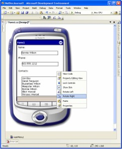
Figure 4. Visual Studio 2005 managed UI designer as portrait.
(Click for larger image)
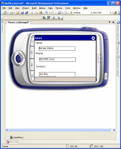
Figure 5. Visual Studio 2005 managed UI designer rotated to landscape
(Click for larger image)
To simplify developing applications that support multiple screen resolutions, all managed controls are now more screen-aware supporting anchoring and docking. Anchoring designates that a control remains a fixed distance from the edge of the form. As the form size and orientation change, the control adjusts its position to remain the same distance from the form's edge. A developer can anchor a control to one or more edges.
Docking a control designates that the control positions itself directly against the form's edge and that the control occupies the entire edge. Developers can dock multiple controls against the same edge to create a stacked effect. As the user rotates the screen, a docked control automatically adjusts to always occupy the designated edge. In Figure 5 the listbox at the bottom of the form is partially obscured when the UI is displayed as landscape. Docking and anchoring easily remedy this problem. Figures 6 and 7 show this same form as portrait and landscape respectively. The text boxes and labels are anchored to the top-left corner of the form and the listbox is docked on the form's bottom edge.
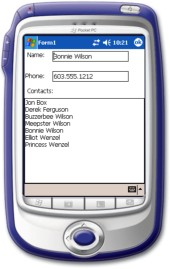
Figure 6. Form displayed as portrait with controls taking advantage of docking and anchoring.
(Click for larger image)
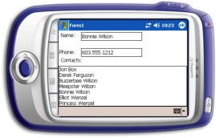
Figure 7. The form in Figure 6, displayed as landscape
(Click for larger image)
For managed applications that target both Pocket PC and Smartphone, the Visual Studio 2005 UI designer is now device-aware and fully understands the difference in screen and control capabilities between the two devices. The designer toolbox automatically adjusts so that only controls that work with the currently selected device are available. Visual Studio 2005 even goes one step further. Developers can literally drag forms originally designed for Pocket PC from the Pocket PC designer to the Smartphone designer with Visual Studio 2005 automatically updating the form for Smartphone. Visual Studio 2005 adjusts the control sizes and offers appropriate substitutions for form controls that are not supported by SmartPhone.
Emulators
Like Windows Mobile 5.0, the goal of Visual Studio 2005 is to improve developer productivity. Key tools for reducing development time are the device emulators. Device emulators enable developers to develop and debug applications without needing access to a device. Visual Studio 2005 offers more emulators with more features than ever before. Figure 8 shows the Windows Mobile 5.0 Pocket PC emulator. Figure 9 shows the Windows Mobile 5.0 Smartphone emulator.
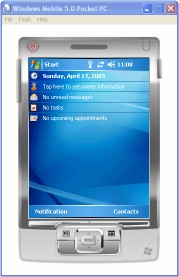
Figure 8. Windows Mobile 5.0 Pocket PC emulator.
(Click for larger image)
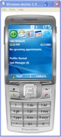
Figure 9. Windows Mobile 5.0 Smartphone emulator.
(Click for larger image)
A True ARM Emulator
Visual Studio 2005 introduces a true ARM emulator. As a true ARM emulator, it provides more accurate and complete application testing capabilities, providing a level of device-to-emulator consistency never before available. The ARM emulator runs the same computer instructions, has the same memory layout, and even uses the same drivers as an ARM device. All device developers will find these features important, but the ARM emulator has an added benefit for native developers because it uses the same binaries as the device. It is no longer necessary to compile one set of binaries for the emulator and a different set for the device. By using the same binaries on both the emulator and devices, developers can reduce development time and provide more accurate testing.
ActiveSync Support
The addition of ActiveSync support further improves the consistency between the emulators and devices. All Visual Studio 2005 emulators can now be "cradled" and connected through ActiveSync. Once connected, an emulator appears to the desktop computer identically to an ActiveSync cradled device. The emulator uses ActiveSync to synchronize e-mail, calendar, contacts, and tasks with Exchange; synchronize folders with the desktop computer; and support all ActiveSync programming features, all of which allow developers to create and test ActiveSync-based programs using the emulator.
Shared Folder Support
To simplify sharing files between the desktop computer and emulators, the emulators now support shared folders. Shared folders allow the emulators to access a folder on the desktop computer, or anywhere on the network. The shared folder appears as an SD card on the emulator. Shared folders make it easy to access desktop computer content from the emulator and are also useful for sharing files between emulators.
Rich Display and More Serial Ports
To match the growing features of Windows Mobile devices, the emulators also have a number of new capabilities. The emulators are now available in all Windows Mobile-supported screen resolutions and support dynamically switching between portrait and landscape displays. For applications that need to communicate with multiple connected-serial devices, the emulators now support four serial ports.
Device Emulator Manager
Together Visual Studio 2005 and the Windows Mobile 5.0 SDK provide developers with 15 different device emulators. The new Device Emulator Manager, shown in Figure 10, provides developers with a central utility for managing these emulators in addition to other emulator images that may be added. The Device Emulator Manager saves the developer time interacting with the emulators as it provides one-stop-shopping for locating, connecting to, or shutting down any of the installed emulators. The Device Emulator Manager is also an important part of the emulator ActiveSync support because it is used to cradle and uncradle the device emulators, thereby connecting the emulators to and disconnecting them from ActiveSync.
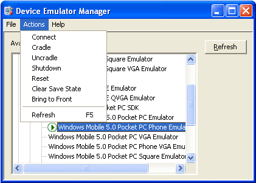
Figure 10. Device Emulator Manager
Data Designers
As device applications become increasingly sophisticated, their data management needs increase in sophistication as well. To simplify the design and maintenance of mobile device databases, Visual Studio 2005 provides new data designers. These designers provide full lifecycle administration of device databases including schema design, table constraint management, and data population. Developers can now perform all database management from their desktop computer.
Figure 11 shows using the Create Table data designer to create a new database table. By using this designer, you can add columns including setting their types, scales, precisions, and null support . You can create special-value columns such as identity and rowguid columns, and you can define the columns that compose the table's primary key. There are similar designers for modifying the schema, creating indices, and populating the database. By using the database diagramming tool as shown in Figure 12, you can define database relationships and constraints. You can also use the designers to create strongly typed DataSets.
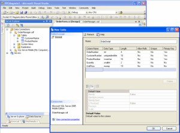
Figure 11. Using the "Create Table" data designer to add a table to the device database.
(Click for larger image)
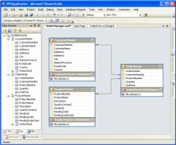
Figure 12. Using Database Diagramming tool to define table relationships.
(Click for larger image)
The data designers provide all of the tools necessary for you to create and manage the database. In addition to the features already discussed, you can use the designers to do basic housekeeping such as compacting the database or encrypting the database contents. Another important feature of the data designers is their connectivity support. The data designers work equally well whether the database is on the desktop computer, contained in an emulator, or located on an actual device. This connectivity support allows you to work equally effectively whether you're creating a new database on the desktop computer that will be included as part of a deployment to hundreds of devices or you're managing the contents of a database contained on a single device.
In addition to the data designers' support for managing databases on both the desktop computer file system and directly on the device, they provide consistent experiences with the server-based data management tools. Developers who have used SQL Server Enterprise Manager or Visual Studio .NET 2003 Server Tools will find the data designers to be very familiar. Developers can now take advantage of a single skill set across all databases without regard for physical location.
Multiple-Platform Development
Visual Studio 2005's support for multiple-platform projects makes targeting multiple device platforms easier than ever. Both native and managed projects can now target both Pocket PC and Smartphone devices. These projects allow developers to use the same code for both devices while maintaining separate user interfaces. These projects can also span multiple Windows Mobile versions. For native developers, Visual Studio 2005 supports targeting multiple CPU types.
Improved Debugger
Application debugging is at the heart of the development experience. For Visual Studio 2005, the device debugger has been completely re-architected to provide device developers with the most complete set of debugging features available while providing unparalleled debugger performance.
Improved Debugger Performance
It comes as a surprise to no one that developers spend a great deal of time using the debugger. A large portion of a developer's overall productivity can be tied directly to the performance of the debugger. This is why the Visual Studio 2005 debugger has been completely re-architected to provide better performance then ever.
The debugger's entire control and communications model has been reworked to distribute the workload much more effectively between the device and desktop computer, reducing CPU-based performance bottle necks. The new debugger further improves performance by greatly reducing the volume of communications between the desktop computer and the device. Because most developers debug using USB 2.0 connections, the debugger has also been optimized for USB 2.0 connections.
Process Attach
With Visual Studio 2005, device developers can now attach to and debug a running process. With this feature, device developers are no longer limited to debugging applications that the debugger starts. Developers can now debug processes that may have been started by a user, the system, or another process. This feature also improves developer productivity by identifying problems that occur in applications that the debugger did not start. Developers can now debug these applications in their current state when they identify a problem, rather than having to restart the application with the debugger and then attempting to recreate the identified problem.
Multiple Process Debugging
Device developers can now debug multiple applications simultaneously. With the introduction of multiple process debugging support, device developers can simultaneously debug cooperative or dependent device applications whether those applications are running on the same device or are running on different devices. This feature works equally well when developers debug applications that are running on emulators.
Support for Combined Native and Managed Solution
Both native and managed code provide many distinct benefits. When building complex device applications, it's not uncommon for developers to combine both native and managed code to take advantage of the strengths of each. With Visual Studio 2005, developers can create a single solution that contains both native and managed projects. This support notably simplifies the task of managing and testing application components because developers can manage all parts of the application as a single unit.
Addition of CAB Designer Project Type
Proper deployment is equally important to the success of an application as sound design and programming. To reduce the time and effort developers use to create device CAB installation files, Visual Studio 2005 introduces the CAB Designer Project. As shown in Figure 13, the CAB Designer Project allows developers to design CAB files graphically. With this graphic model, developers need only associate deployment files with specific folders and make any necessary registry modifications leaving Visual Studio 2005 to do the work of actually constructing the CAB file. For applications that require code signing, applying an Authenticode Signature is as simple as setting a single project property.
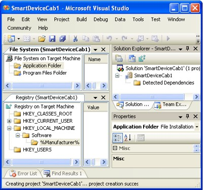
Figure 13. Visual Studio 2005 CAB Designer Project.
Improved Intellisense
Intellisense has long been one of the most impactful productivity tools in the Visual Studio family significantly reducing typing and eliminating the need for developers to look up method parameter lists. Building on these advantages, Visual Studio 2005 takes Intellisense even further by making it more context aware displaying only the targeted platform types and members.
This feature is extremely useful in cases where a specific platform may not support all available controls. For example in a project that targets Smartphone, only those controls valid for Smartphone appear in Intellisense, whereas using the same libraries in a project that targets Pocket PC, Intellisense would automatically include the additional supported controls.
Windows Mobile 5.0 SDK
The Windows Mobile 5.0 SDK is a free download that integrates Windows Mobile 5.0 developer tools into Visual Studio 2005. The Windows Mobile 5.0 SDK provides the necessary emulators, help files, headers, and libraries to allow developers whose applications target Windows Mobile 5.0 to take advantage of the platform. Table 11 summarizes the benefits of installing the Windows Mobile 5.0 SDK.
| Function | Description | | Windows Mobile 5.0 emulators | Installs the full suite of Windows Mobile 5.0 Pocket PC and Smartphone emulator images, making them directly available from within Visual Studio 2005. | | Windows Mobile 5.0 documentation | Installs the complete Windows Mobile 5.0 documentation set, fully integrating it into the Visual Studio 2005 Help system. | Windows Mobile 5.0 native headers
and libraries | Installs all headers and libraries required for C/C++ developers to create applications that take advantage of Windows Mobile 5.0 features. | Windows Mobile 5.0
managed assemblies | Installs all managed assemblies that C# and Visual Basic .NET developers require to create applications that take advantage of the Windows Mobile 5.0 managed APIs. These features are available to both .NET Compact Framework 1.0 and 2.0 applications. | | Windows Mobile 5.0 projects | Installs and registers the Windows Mobile 5.0 project types in Visual Studio 2005. |
Table 11. Windows Mobile 5.0 SDK features
Migrating to Visual Studio 2005
Windows Mobile 5.0 does not require developers to upgrade existing applications created with eMbedded Visual C++ 3.0, eMbedded Visual C++ 4.0, or Visual Studio .NET 2003 to Visual Studio 2005. Applications built with these tools continue to run on Windows Mobile 5.0. Windows Mobile 5.0 considers these applications to be "legacy" applications. If these applications are not specifically designed to be resolution aware, they are subject to runtime modifications to the application display discussed in the Resolution and Orientation Aware section of this article. These existing applications may also have library or API dependencies that require developers to give them special attention and may be subject to rigid security requirements when deployed to a Windows Mobile 5.0 device.
Note Windows Mobile 5.0 contains important changes from earlier Windows Mobile platforms including changes to the installed libraries and security models. Developers who are considering deploying or migrating existing applications to Windows Mobile 5.0 are encouraged to read Windows Mobile Platform Migration FAQ for Developers. Although applications created with eMbedded Visual C++ 3.0, eMbedded Visual C++ 4.0, and Visual Studio .NET 2003 continue to run on Windows Mobile 5.0 devices, only Visual Studio 2005 can debug and deploy applications directly to a Windows Mobile 5.0 device or emulator.
Migrating Embedded Visual C/C++ Projects to Visual Studio 2005
Visual Studio 2005 provides a complete suite of device development tools improving the compilers and libraries provided by eMbedded Visual C++ 3.0 and 4.0. These changes as well as differences between the eMbedded Visual C++ and Visual Studio 2005 project files require that existing eMbedded Visual C++ projects being migrated to Visual Studio 2005 undergo several modifications.
These modifications include creating a new project file in Visual Studio 2005 (possibly based on the eMbedded Visual C++ project file) and to add the project header and source files to the new project. After this is done, differences in the compilers and libraries may require changes to the project properties and, in some cases, developers may need to change the source code itself. In many cases, source code changes are the result of the improved C++ standards conformance that the new compiler provides.
To simplify migration, Visual Studio 2005 provides an upgrade wizard. Developers can use the wizard to convert an individual project or an entire eMbedded Visual C++ Workspace to a Visual Studio 2005 solution. The wizard is automatically launched by using the standard open project feature of Visual Studio 2005 to open the original eMbedded Visual Project or Workspace.
To use the Visual Studio 2005 open project feature: - On the File menu, point to Open, and then click Project/Solution.
Note Visual Studio 2005 performs the project upgrade in-place and adds the original header and source files to the new project. It is strongly recommended that you make a backup of the eMbedded Visual C++ project or workspace, including all related files, prior to starting the upgrade process.
The upgrade wizard performs the following tasks: - Creates a new Visual Studio 2005 project or, in the case of migrating a workspace, a new Visual Studio 2005 solution.
- If the wizard is converting a workspace, all workspace projects are added to the new solution as Visual Studio 2005 projects.
- Adds all project files to their respective projects.
- Maps all project properties and settings to their Visual Studio 2005 equivalents.
- Maps any deprecated platforms or architectures that the original projects target to an equivalent platform or architecture.
The upgrade wizard focuses on upgrading the projects and workspaces the upgrade wizard makes no changes to the source code. After the upgrade wizard is complete, the next step is to compile the code and correct any compilation issues.
Note A list of common migration issues in addition to a detailed description of the migration process is available in Migrating Microsoft eMbedded Visual C++ Projects to Visual Studio 2005. Developers are strongly encouraged to refer to this document prior to performing their first eMbedded Visual C++ to Visual Studio 2005 upgrade. Migrating Visual Studio 2003 Projects to Visual Studio 2005
Managed developers who are migrating projects or solutions from Visual Studio .NET 2003 to Visual Studio 2005 should find the process to go relatively smoothly. Visual Studio 2005 provides an upgrade wizard that automatically converts the project settings to the equivalent values in Visual Studio 2005. It also automatically adds the project source files to the newly created project. The upgrade wizard does not make any changes to source code files. It is strongly recommended that developers back up the entire project or solution, including all contained files, before they perform the upgrade.
Developers who are migrating Visual Studio .NET 2003 projects to Visual Studio 2005 and who are intending to target Windows Mobile 5.0 are strongly encouraged to read Windows Mobile Platform Migration FAQ for Developers because some platform changes may affect the applications' ability to install and run on Windows Mobile 5.0 devices.
Remote Tools
To effectively develop device applications, a developer needs to frequently interact with the target device. Many of the common tasks that developers perform while developing applications, such as viewing the file system or modifying the registry, can be cumbersome to perform directly on the device. To simplify these and other device management and monitoring tasks, Visual Studio 2005 provides Remote Tools.
Visual Studio 2005 Remote Tools are a group of desktop computer utilities that provide common device monitoring and management features. Table 12 shows the Visual Studio 2005 Remote Tools. By using these tools, developers monitor and manage devices or emulators with the same ease and efficiency that they interact with their desktop computers. These tools are very similar to the Remote Tools included with eMbedded Visual C++. Visual Studio 2005, however, is the first program to provide these utilities to both native and managed developers.
| Remote Tool | Description | | File Viewer | Used to view and interact with the device or emulator file system including copying files between the device and desktop computer (see Figure 14). | | Heap Walker | Used to examine heap layout and memory contents of device or emulator processes. | | Process Viewer | Used to view detailed thread and DLL information about device or emulator processes (see Figure 15). Can also be used to end device or emulator processes. | | Registry Editor | Used to view and modify the device or emulator registry. | | Spy | Used to view the list of Windows owned by processes running on the device or emulator, including details about the Window handles and received Window messages. | | Zoom In | Used to capture device or emulator screenshots. (Users can enlarge or optionally save the screenshots as bitmaps.) |
Table 12. Visual Studio 2005 Remote Tools
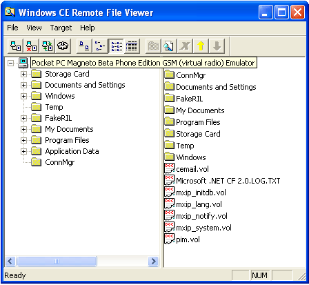
Figure 14. Visual Studio 2005 Remote File Viewer
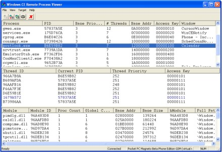
Figure 15. Visual Studio 2005 Remote Process Viewer.
(Click for larger image)
Native Compilers and Libraries
Visual Studio 2005 provides native developers with a number of significant enhancements. These enhancements include the compiler, the standard C library, MFC and ATL. In addition to providing improved application quality, these enhanced versions have much greater parity with their desktop computer counterparts they further improve the developers' abilities to share both code and skills between desktop computers and device application development.
Compilers
Visual Studio 2005 provides native device developers with an entirely new set of device cross-compilers that support ARM, MIPS, SH, and x86 platforms. These compilers have been completely re-architected with a new compiler front-end, which is based on the latest desktop computer compiler.
The common front-end architecture provides much greater consistency in compiler behavior between the desktop computer and devices, making it much easier for developers to port both application code and their skills. Developers moving to device development can also preserve existing code investment and minimize their learning curve. Because the new compiler front-end is based on the desktop computer compiler, many desktop computer compiler features are now incorporated into the device compiler.
Thanks to the incorporation of desktop computer compiler features, the device compiler is able to provide a number of optimization improvements not previously available. In addition to compiler optimizations, device developers now reap the benefits of link-time code generation. Link-time code generation provides applications the opportunity for even greater optimization then compiler optimizations alone because this optimization can be performed across compilation modules (*.bin files), allowing the opportunity for the program to be optimized as a whole.
The compiler improvements are not limited to code optimization. Because the device compiler takes advantage of the desktop computer compiler, it is now able to incorporate many features that were previously limited to the desktop computer. For example, the device compiler now provides a much higher level of C/C++ standards conformance. Similarly, the device compiler is now able to provide significantly enhanced Unicode support.
Libraries
In addition to providing updated compilers, Visual Studio 2005 also provides updated versions of the native libraries including the Standard C++ Library 8.0 (SCL), Standard Template Library 8.0 (STL), Microsoft Foundation Classes 8.0 (MFC), and Active Template Library 8.0 (ATL). Like the compiler, all of these libraries have been updated and are now based on their desktop computer counterparts. Although based on the corresponding desktop computer libraries, each device implementation is a subset of the desktop computer implementation. The subset is based on size considerations, performance considerations, availability of underlying operating system features, and platform appropriateness.
Basing the new native libraries on their desktop computer counterparts provides device developers with a number of benefits. The most obvious is that application code is now more portable because the desktop computer and device versions of the libraries themselves are more compatible. This portability also applies to developer skill. In the past, some of the desktop computer libraries have been more stable then the corresponding device implementation. The updated libraries now provide device developers with the highest quality implementation available.
For developers using MFC or ATL, it is important to remember that Windows Mobile 5.0 devices ship with MFC 3.0 and ATL 4.0 installed in ROM. Developers who use the new updated libraries, MFC 8.0 and ATL 8.0, must be sure to either statically link the version 8.0 libraries into their applications or include the version 8.0 DLLs in their applications' install.
Note For more detailed information about native application development using Visual Studio 2005, see What's New in Visual Studio 2005 for Native Developers.
Other Windows Mobile 5.0 Changes Affecting Developers
Windows Mobile 5.0 provides many improvements even beyond the tools and APIs already discussed. The following list provides an overview of some of the additional Windows Mobile 5.0 features.
Software Available in ROM
Table 13 shows some of the key developer libraries, controls, and runtimes available in the ROM of all Windows Mobile 5.0 devices. Any library, control, or runtime that your application requires and that is not listed in this table must be explicitly installed on target devices. Please note that the .NET Compact Framework 2.0, SQL Mobile 2005, MFC 8.0, and ATL 8.0 are not available in the ROM of Windows Mobile 5.0 devices and, therefore, you must install them (or in the case of MFC 8.0 and ATL 8.0, they may be statically linked into your program).
| .NET Compact Framework 1.0 SP3/td> | Contact Selection Dialog | | MFC 3.0 and ATL 4.0 | Windows Media 10 OCX | | State and Notification Broker | Managed Telephony | | DirectShow | Managed Outlook Mobile | | Direct3D Mobile | Managed Messaging | | DirectDraw | Managed Configuration Manager | | Picture Selection Dialog | GPS API |
Table 13. Libraries, controls, and runtimes in Windows Mobile 5.0 device ROM
Resolution and Orientation Aware
Windows Mobile 5.0 devices support a variety of screen sizes and orientations including portrait, landscape, and square. All applications that target Windows Mobile 5.0 are marked as being screen resolution and orientation aware; therefore, it is very important that developers design and verify applications to work effectively across various screen resolutions and orientations. In addition to verifying support for the different resolutions and orientations, developers should prepare applications for the device orientation to change at anytime during the application's lifetime because many Windows Mobile 5.0 devices support dynamically changing between portrait and landscape orientations.
For managed developers, generally the best way to be prepared for dealing with different screen resolutions and orientations is to take advantage of the managed controls' Dock and Anchor properties. Managed applications automatically adjust the size of each application form to match the current device's screen layout. When the user changes a device's screen orientation while an application is running, all application forms are automatically reoriented to match the new screen layout. By using the Dock and Anchor properties, all form controls are automatically repositioned as part of any form layout change.
For native developers, Visual Studio 2005 provides a number of helper functions in DeviceResolutionAware.h to simplify the process of making applications resolution and orientation aware. By using the provided helper functions, developers can design applications to interrogate the current orientation, scale graphical resources, and modify the current dialog layout with a resource more appropriate for the current screen layout. Table 14 lists some of these functions.
| Function | Description | | DRA::GetDisplayMode | Identifies whether the display is currently configured as portrait, landscape, or square. | | DRA::RelayoutDialog | Modifies the layout of a dialog to correspond to the specified dialog resource. | DRA::StretchIcon
DRA::StretchBitmap | Stretches an icon or bitmap to the specified size. | | DRA::ImageList_LoadImage | Creates an image list from the specified bitmap, automatically scaling the images to accommodate differences in the bitmap and screen dots-per-inch values. |
Table 14. Native functions to assist with screen resolution and orientation management
Whether developers use managed or native development tools, developers should prepare all applications targeting Windows Mobile 5.0 for all supported screen sizes and orientations. By using the emulators provided with the Windows Mobile 5.0 SDK, developers can easily verify application appearances and behaviors because the provided emulators represent all possible Windows Mobile 5.0 screen layouts.
Windows Mobile 5.0 will continue to run existing applications that may not be screen aware. In cases where an application targets a lower resolution than the device supports, Windows Mobile 5.0 will automatically perform pixel-doubling, which will scale the application to match the device display. In the event that the device orientation results in portions of the application display being cut off, Windows Mobile 5.0 automatically adds scrollbars to allow the user to scroll and view the remainder of the screen.
Pocket PC Soft Keys
Windows Mobile 5.0 introduces soft keys to Pocket PC. As shown in Figure 16, soft keys are the application modifiable keys appearing at the bottom of the screen that are tied to the hardware keys immediately below the screen. Soft keys have existed for Smartphone since the original release and have been valuable user productivity tools. On Pocket PC, soft keys can avoid the need for a stylus because they enable the user to interact with the application by using only one hand.
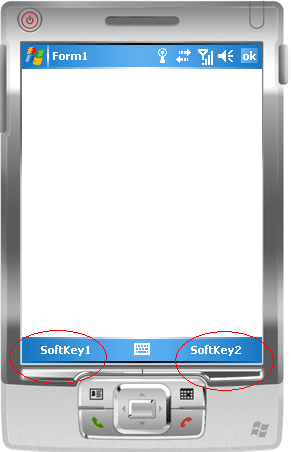
Figure 16. Windows Mobile 5.0 Pocket PC soft keys.
Adding smart keys to an application is as simple as designing a menu. When designing your application, simply create a menu with only two choices. When the application executes, Windows Mobile 5.0 will map each menu choice to a soft key. Windows Mobile 5.0 automatically provides this behavior to any application containing a menu with one or two choices. Menus containing more then two choices are rendered as a traditional menu.
Persistent Store
Windows Mobile 5.0 protects all data and applications from power-related loss. Because Windows Mobile 5.0 mounts the entire file system and registry in persistent store (rather than using RAM), Windows Mobile 5.0 devices provide both users and applications with a reliable storage platform even in the absence of battery power.
Persistent store provides application developers with a reliable storage system made available entirely through the standard file system and registry APIs. Persistent store is optimized for large reads and writes; therefore, applications reading and writing data in large chunks will tend to outperform those applications reading and writing small blocks of data.
EDB
To improve the performance and long-term portability of applications, the CEDB object store has been replaced with EDB. EDB takes advantage of the storage subsystem SQL Mobile uses and provides notably improved performance over CEDB, especially when used with persistent store. Porting applications from CEDB to EDB is minimally impactful because CEDB provides an identical function set to CEDB -- all functions have the same names and parameter lists.
Pocket PC Application Security
To help users and enterprises protect the integrity of their Pocket PC devices, Windows Mobile 5.0 brings the certificate-based application security model that Smartphone uses to Pocket PC. With this application security model, Windows Mobile 5.0 devices rely on digital code signing to verify that any application that a user installs onto a device is indeed from the source it claims and that no one has modified the application prior to the user installing it on the device.
By default, when a new application install is initiated on a Windows Mobile 5.0 Pocket PC, prior to performing the actual installation, the device checks to see if the application has been digitally signed with a certificate from a trusted source. If the device determines that the application is from a trusted source, it installs the application. If the application is unsigned or is not signed with a certificate from a known trusted source, the device prompts the user as to whether the install should proceed. This model gives users absolute control over what applications are installed on their devices.
For enterprises that want to closely control the applications installed on enterprise devices, they can modify this default model. In this scenario, enterprises can remove the default list of trusted sources and can install their own list. Additionally, enterprises can disable the option to prompt users in the event that applications are unsigned or from an unknown source. After enterprises disable this option, users can only install applications that are signed by one of the sources deemed trusted by the enterprise. This model substantially improves the stability and reliability of enterprise devices because it eliminates problems and support issues caused by users installing personal software.
Pocket PC and Smartphone Share A Common CAB Format
Windows Mobile 5.0 software for Pocket PCs and Smartphones now share a common CAB format. Sharing a common CAB file format notably reduces the time required to create CAB files and to support the installation process because all device installations are handled through a single CAB.
ActiveSync
One of the key considerations in any mobile device application is how data on the device is synchronized with data on the desktop computer or backend server. For many applications, the answer is ActiveSync as it provides an end-to-end data synchronization solution for Windows Mobile devices. For Windows Mobile 5.0, ActiveSync incorporates a number of enhancements to provide a higher quality and more reliable synchronization experience.
Improved USB 2.0 Support
Although ActiveSync provides a number of connectivity options including Bluetooth, Infrared, and Serial, developers most commonly use USB 2.0. To improve the ActiveSync experience when developers connect through a USB 2.0 connection, the ActiveSync USB drivers have been completely rearchitected. These new drivers now take full advantage of the capabilities and performance of USB 2.0 hardware. In addition, these new drivers now cooperate much more effectively with the desktop computer networking services. These new drivers and their better cooperation with desktop networking services combine to substantially increase synchronization throughput.
Improved Management of Multiple Partnerships
In addition to ActiveSync's existing support for a device maintaining partnerships with multiple desktop computers, ActiveSync has improved its handling of partnership management. Now ActiveSync supports simultaneous partnerships with both desktop computers and servers. ActiveSync also has newly architected logic for detecting conflicts between partnerships. This new logic is much more effective in detecting conflicts notably reducing the incidents of duplicated information between partnerships.
Improved Exchange Synchronization
One of the key focuses in updating ActiveSync was to improve the user's overall experience of synchronizing a device with Exchange. These updates have resulted in several key changes. One of the most notable is the improvement in connection reliability when synchronizing with Exchange. This improvement has resulted in both more successful initial connections and reduced the number of dropped or incomplete connections. These changes also improve synchronization continuity between synchronizing directly with the Exchange server and synchronizing with Exchange through a desktop computer connection. These now provide identical synchronization behavior and results.
ActiveSync now provides an even more complete Exchange synchronization experience. In addition to ActiveSync's long standing support for synchronizing appointments, contacts, and calendars, it also now supports synchronizing tasks as well. As part of providing a more complete experience, ActiveSync is now also able to synchronize additional Outlook properties. The most notable of which is the ability to now synchronize pictures that are included as part of a contact.
Improved Security
In addition to the feature enhancements, ActiveSync also includes many security enhancements. These enhancements are the result of stringent security reviews and serve to better protect you, your device, data, and desktop computer. One key security change is the removal of remote synchronization. In previous versions, remote synchronization allowed a device to synchronize by using a WiFi connection. After being reviewed, it was determined that this feature did not provide adequate security and has been removed.
RAPI
The Windows Mobile Remote API (RAPI) is a family of functions used to manage, interact with, and control a connected device from the desktop computer. In addition to supporting the long-standing C-style RAPI, Windows Mobile 5.0 also provides a new COM-based implementation. The new COM-based RAPI provides a key architectural shift from the existing C-style implementation. Unlike the C-style RAPI that assumes exactly one Windows Mobile device is connected to the desktop computer, the COM-based RAPI is designed to interact with and support multiple devices simultaneously connected to the desktop computer.
It is important to note that Windows Mobile 5.0 still only provides support for having a single device connected to the desktop computer it does not support multiple simultaneously connected devices. However support for multiple Windows Mobile devices being simultaneously connected to a single desktop computer is a feature that is likely for future Windows Mobile implementations to support.
Although applications that are written to use the new COM-based RAPI will be limited to interacting with a single connected Windows Mobile 5.0 device, these applications are prepared to interact with multiple connected devices should support for this feature be added to future Windows Mobile devices. All newly created RAPI applications that target Windows Mobile 5.0 are encouraged to use COM-based RAPI. Table 15 shows the three primary RAPI COM interfaces.
| Interface | Description | | IRAPIDesktop | Represents the current desktop computer. Provides the ability to enumerate the list of connected devices, locate a specific device, and monitor for new connections. | | IRAPIDevice | Represents a connected device. Provides the ability to interrogate the device, identify the devices connection type, and initiate a RAPI session with the device. | | IRAPISession | Represents a RAPI session with a specific connected device. This interface is used to perform the actual device interaction. |
Table 15. The primary RAPI COM interfaces
Windows Media Player 10
Windows Media Player 10 provides users with a rich multimedia experience that provides high-quality support for both audio and video playback. Windows Mobile 5.0 makes these capabilities available to application developers who want to incorporate multimedia playback into their applications by exposing the Windows Media Player 10 as an OCX. Using the Windows Media OCX, developers can manage playlists, enumerate content, stream content, control playback quality, and much more. Figure 17 shows the Windows Media Player 10 Library and Music Playback screens.
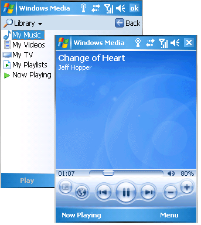
Figure 17. The Windows Media Player 10 Library and Music Playback screens.
Conclusion
Windows Mobile 5.0 puts the powerful capabilities of modern mobile devices into easy reach of developers. The powerful native and managed APIs combine to provide developers with an easy to use and efficient development platform. The greater continuity of classes and libraries with their desktop computer counterparts and the unified development environment that Visual Studio 2005 provides all combine to improve developer productivity and enable developers to more effectively take advantage of their skills and code investments.
Windows Mobile 5.0 is the most powerful mobile device platform available. Together Windows Mobile 5.0 and Visual Studio 2005 combine to empower developers to create more powerful and easier to use applications while allowing developers to continue to focus on and make the most use of their core skill sets.
Copyright 2005 Microsoft Corp. All rights reserved. This article was initially published on Microsoft's MSDN website. Reproduced by WindowsForDevices.com with permission.
 |
|
|
|
|
|
|
|
 Use of this site is governed by our
Terms of Use
and Privacy Policy.
Except where otherwise specified, the contents of this site are copyright © 1999-2005
Ziff Davis Publishing Holdings Inc.
All Rights Reserved. Reproduction in whole or in part without permission is prohibited. Windows is a trademark or registered trademark of Microsoft Corporation in the United States and/or other countries and is used by WindowsForDevices under license from owner. All other marks are the property of their respective owners. WindowsForDevices is an independent publication not affiliated with Microsoft Corporation.
Use of this site is governed by our
Terms of Use
and Privacy Policy.
Except where otherwise specified, the contents of this site are copyright © 1999-2005
Ziff Davis Publishing Holdings Inc.
All Rights Reserved. Reproduction in whole or in part without permission is prohibited. Windows is a trademark or registered trademark of Microsoft Corporation in the United States and/or other countries and is used by WindowsForDevices under license from owner. All other marks are the property of their respective owners. WindowsForDevices is an independent publication not affiliated with Microsoft Corporation. 2005
market survey
2005
market survey


 news feed
news feed